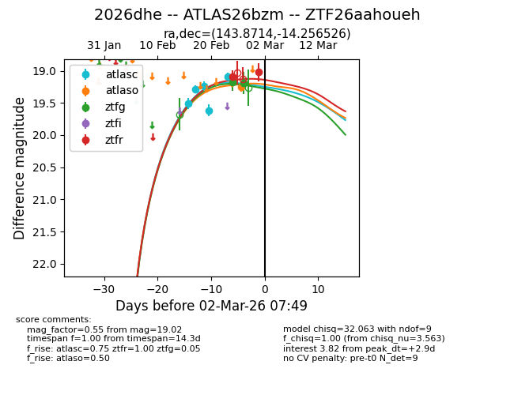
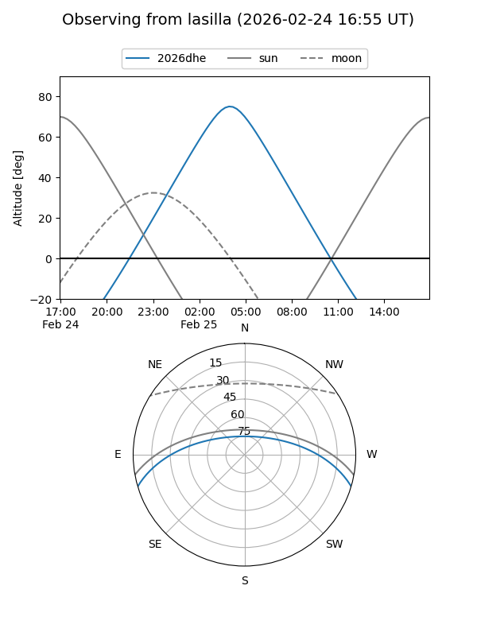
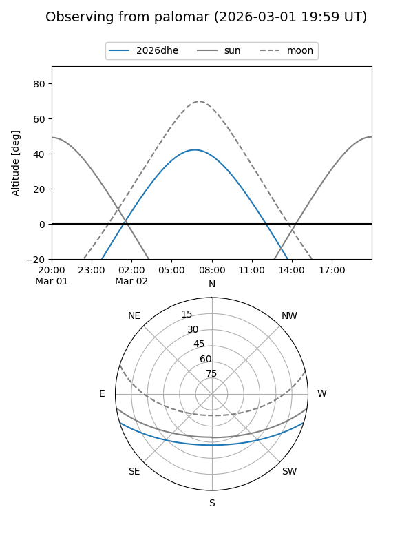
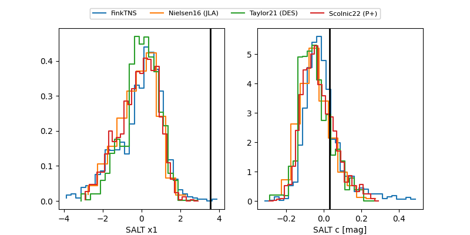

2026dhe
Target 2026dhe at 2026-03-02 07:50
Aliases and brokers:
FINK: link
Lasair: link
ALeRCE: link
TNS: link
YSE: link
alt names
ZTF26aahoueh (ztf,fink_ztf)
2026dhe (tns,yse)
ATLAS26bzm (atlas)
Coordinates:
equatorial (ra, dec) = 143.8714,-14.25653
equatorial (HMS+DMS) = 09:35:29.13,-14:15:23.49
galactic (l, b) = (247.7789,+26.98426)
Flags:
Photometry:
last atlasc=19.09, atlaso=19.25, ztfg=19.19, ztfr=19.02
5 atlasc, 1 atlaso, 2 ztfg, 2 ztfr detections
Lightcurve

Visibility


Additional plots
